Air conditioner
Using the remote control
- Handle with care: do not get it wet or drop it.
- Do not expose it to direct sunlight.
- Remove the batteries if it is not used for a long period.
- Keep the remote where its signal can reach the unit's receiver (maximum 8 metres).
Remote control (bedroom)
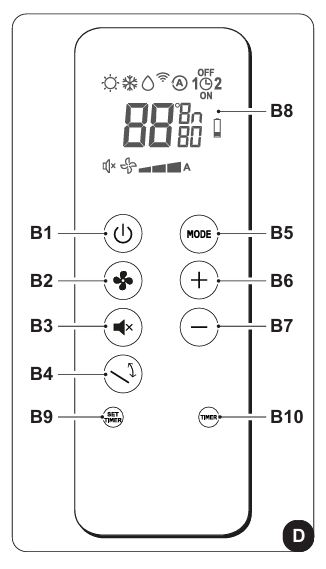
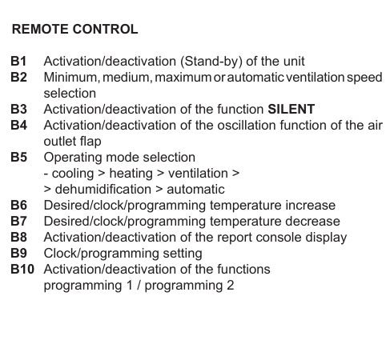
Remote control (living room)
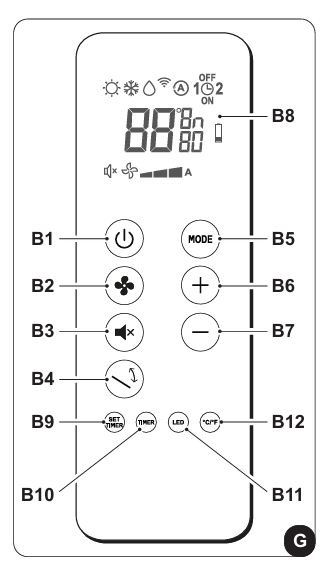
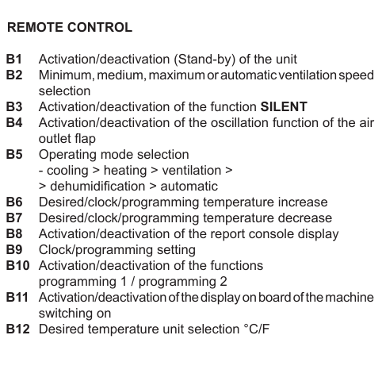
Remote control display
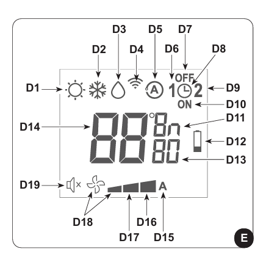
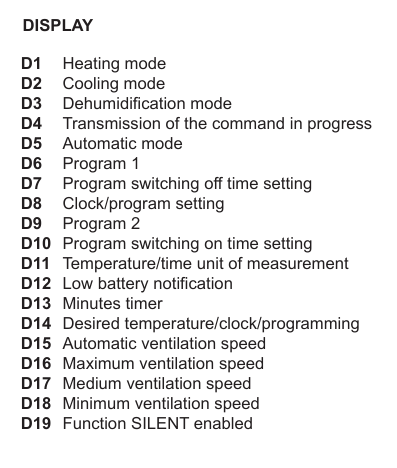
Functions
- On/Off: press B1
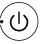
to turn the air conditioner on or off. - Fan speed: press B2 to change the speed: Low › Medium › High › Automatic.
- Automatic mode: adjusts temperature and fan speed by itself. Press B5
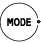
until the D5 symbol is displayed. - Dehumidification: press B5 until the D3 symbol
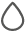
and the minimum-fan symbol D18 are displayed. - Fan only: does not change temperature or humidity. Press B5 until only the minimum-fan symbol D18 is displayed.
- Heating: press B5 until the D1 symbol is displayed.
- Airflow: press B4
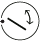
to start/stop the continuous swing of the air flap. - SILENT: gradually reduces the fan speed. Press B3 to activate it.
Energy saving
- Keep doors and windows closed while it is running.
- Do not block the air inlets and outlets.
Warning lights
- LED A: the filter needs cleaning.
- LED B: high battery temperature.
- LED A + C flashing: pump running continuously.
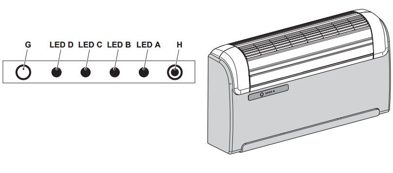
General warnings
- Do not move the air outlet flap by hand.
- If water leaks, switch the unit off and unplug it immediately.
If you have any problem, contact the host, Alessandro.
Condizionatore
Uso del telecomando
- Maneggialo con cura: non bagnarlo e non farlo cadere.
- Non esporlo alla luce diretta del sole.
- Togli le batterie se non lo usi per molto tempo.
- Tienilo in una posizione da cui il segnale raggiunge il ricevitore dell'apparecchio (massimo 8 metri).
Telecomando (camera)
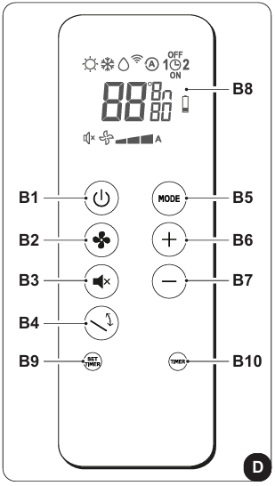
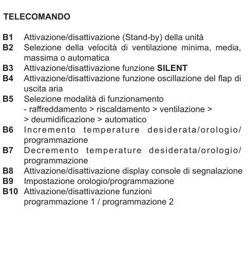
Telecomando (salotto)
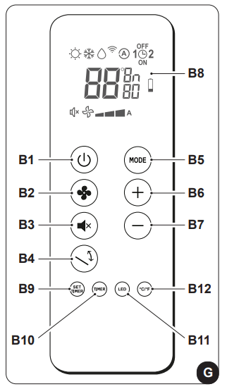
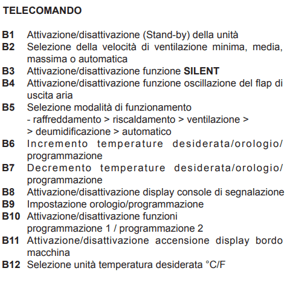
Display del telecomando
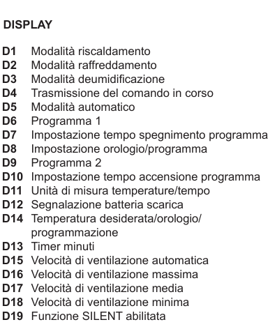
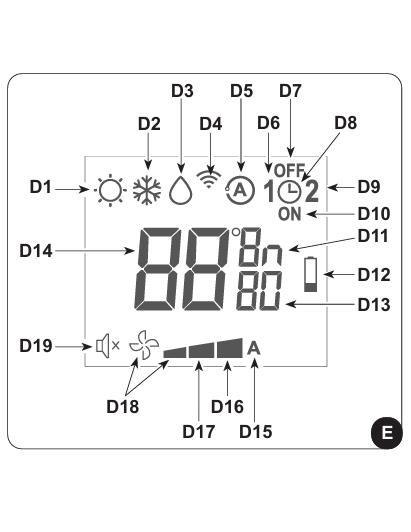
Funzioni
- Accensione/spegnimento: premi B1 per accendere o spegnere il condizionatore.
- Velocità del ventilatore: premi B2 per cambiare la velocità: Bassa › Media › Alta › Automatica.
- Modalità automatica: regola da sola temperatura e velocità della ventola. Premi B5 fino a vedere il simbolo D5 .
- Deumidificazione: premi B5 fino a vedere il simbolo D3 e la ventilazione minima D18 .
- Solo ventilazione: non agisce su temperatura o umidità. Premi B5 fino a vedere solo il simbolo della ventilazione minima D18 .
- Riscaldamento: premi B5 fino a vedere il simbolo D1 .
- Flusso d'aria: premi B4 per attivare/disattivare l'oscillazione continua del deflettore.
- SILENT: riduce gradualmente la velocità del ventilatore. Premi B3 per attivarla.
Risparmio energetico
- Tieni porte e finestre chiuse mentre è in funzione.
- Non ostruire le prese e le uscite d'aria.
Spie di allarme
- LED A: il filtro va pulito.
- LED B: temperatura della batteria alta.
- LED A + C lampeggianti: pompa in funzionamento continuo.
Avvertenze generali
- Non muovere a mano il deflettore dell'aria.
- In caso di perdite d'acqua, spegni subito l'apparecchio e stacca la spina.
Se riscontri problemi, contatta l’host, Alessandro.
Aire acondicionado
Uso del mando a distancia
- Manéjalo con cuidado: no lo mojes ni lo dejes caer.
- No lo expongas a la luz directa del sol.
- Quita las pilas si no lo usas durante mucho tiempo.
- Mantenlo en una posición desde la que la señal llegue al receptor del aparato (máximo 8 metros).
Mando a distancia (dormitorio)
Mando a distancia (salón)
Pantalla del mando
Los esquemas están en italiano; las letras B (botones) y D (símbolos) son las mismas.
Funciones
- Encender/apagar: pulsa B1 para encender o apagar el aire acondicionado.
- Velocidad del ventilador: pulsa B2 para cambiar la velocidad: Baja › Media › Alta › Automática.
- Modo automático: regula solo la temperatura y la velocidad del ventilador. Pulsa B5 hasta ver el símbolo D5 .
- Deshumidificación: pulsa B5 hasta ver el símbolo D3 y la ventilación mínima D18 .
- Solo ventilación: no cambia la temperatura ni la humedad. Pulsa B5 hasta ver solo el símbolo de ventilación mínima D18 .
- Calefacción: pulsa B5 hasta ver el símbolo D1 .
- Flujo de aire: pulsa B4 para activar/desactivar la oscilación continua del deflector.
- SILENT: reduce gradualmente la velocidad del ventilador. Pulsa B3 para activarla.
Ahorro de energía
- Mantén puertas y ventanas cerradas mientras funciona.
- No obstruyas las entradas y salidas de aire.
Luces de aviso
- LED A: hay que limpiar el filtro.
- LED B: temperatura alta de la batería.
- LED A + C parpadeando: bomba en funcionamiento continuo.
Advertencias generales
- No muevas a mano el deflector de salida del aire.
- Si pierde agua, apaga el aparato y desenchúfalo inmediatamente.
Si tienes algún problema, contacta con el anfitrión, Alessandro.